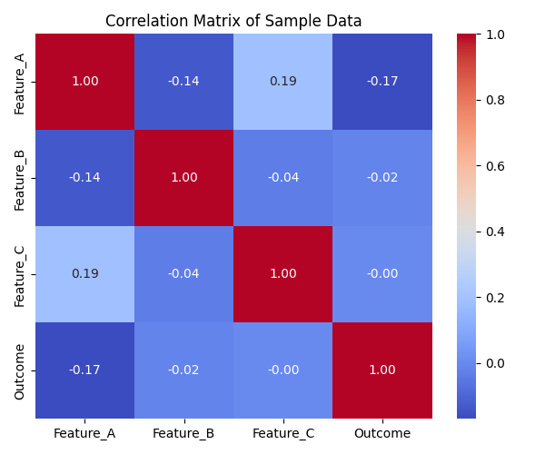
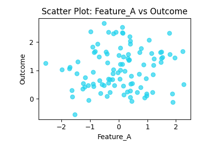
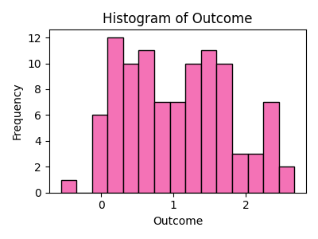
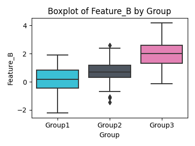
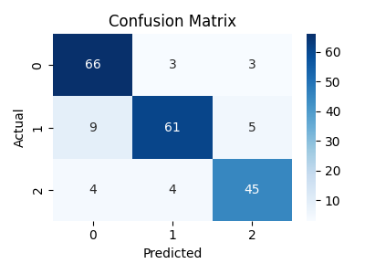
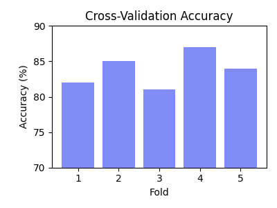

Synthesizing Medicine, Behavior & Data
I leverage my unique expertise as a BCBA, MD Candidate, and Data Scientist to build intelligent tools that drive meaningful clinical outcomes.
Explore the AI DashboardA Data-First Approach to Care
My work is founded on a simple principle: every clinical interaction is a data point. By applying rigorous data science methodologies to the nuanced world of behavior analysis and medicine, we can uncover patterns, predict outcomes, and personalize interventions with unprecedented accuracy.
This perspective, informed by my own journey as an individual with Level 1 ASD and Combined-Type ADHD, allows me to bridge the gap between clinical intuition and empirical evidence, creating solutions that are both compassionate and effective.
BCBA
Clinical Expertise
MD Cand.
Medical Foundation
Data Scientist
Analytical Insight
AI Insights Dashboard
A functional demo of a data-driven tool for clinical oversight.
Client Roster
Select a client to view their data.
Skill Mastery
Behavior Reduction
Parent Training
Next Milestone
Weekly Progress Overview
Data Science Projects
Interactive examples of my analytical work.
Behavioral Phenotype Clustering
Using K-Means clustering to identify distinct behavioral phenotypes. This allows for targeted treatment tracks, such as prioritizing communication for 'Escape-Motivated' profiles.
Intervention Forecasting
Applying time-series analysis to forecast skill acquisition rates and predict dates for milestone achievement.
Session Sentiment Analysis
Using NLP on session notes to quantify subjective progress and correlate with objective behavioral data.
Feature Importance
A model identifying which factors (e.g., parent training) are most predictive of positive client outcomes.
TCGA Cancer Case Analysis
Using publicly available case counts from the TCGA program, this project explores which cancer types have the most characterized samples and visualizes the distribution across 30+ tumor types. The analysis was performed in a Jupyter notebook, and the resulting bar chart is shown below. You can download the notebook to see the full code and analysis.
Insights & Publications
Exploring the frontiers of clinical data science.
Python & Machine Learning Demonstrations
A collection of examples showcasing data analysis, visualization, and machine learning techniques.
Correlation Heatmap
A heatmap generated using Pandas, NumPy and Seaborn to visualize feature correlations.

import pandas as pd
import numpy as np
import seaborn as sns
import matplotlib.pyplot as plt
data = pd.DataFrame({
'Feature_A': np.random.normal(0,1,100),
'Feature_B': np.random.normal(3,1.5,100),
'Feature_C': np.random.normal(-2,0.5,100),
'Outcome': np.random.normal(1,0.7,100)
})
corr = data.corr()
sns.heatmap(corr, annot=True, cmap='coolwarm')
Scatter Plot
A scatter plot generated in Python to explore the relationship between Feature A and Outcome.

import matplotlib.pyplot as plt
plt.scatter(data['Feature_A'], data['Outcome'])
plt.xlabel('Feature_A'); plt.ylabel('Outcome')
plt.title('Feature_A vs Outcome')
Histogram
A histogram showing the distribution of the Outcome variable.

plt.hist(data['Outcome'], bins=15)
plt.xlabel('Outcome'); plt.ylabel('Count')
plt.title('Histogram of Outcome')
Boxplot
A boxplot comparing Feature B across three groups.

import seaborn as sns
sns.boxplot(x=groups, y=feature_b)
plt.xlabel('Group'); plt.ylabel('Feature_B')
Confusion Matrix
A heatmap of a confusion matrix for a 3-class classifier.

from sklearn.metrics import confusion_matrix
cm = confusion_matrix(actual, predicted)
sns.heatmap(cm, annot=True, fmt='d')
Cross-Validation Accuracy
A bar chart displaying classification accuracy across five cross-validation folds.

folds = [1,2,3,4,5]; accuracy = [0.82,0.85,0.81,0.87,0.84]
plt.bar(folds, accuracy)
plt.xlabel('Fold'); plt.ylabel('Accuracy')
Training Accuracy Plot
An interactive Plotly chart showing model accuracy across epochs.
ROC Curve
An interactive ROC curve built with Chart.js illustrating classifier performance.
from sklearn.metrics import roc_curve
fpr, tpr, _ = roc_curve(true_labels, scores)
plt.plot(fpr, tpr)
plt.xlabel('False Positive Rate'); plt.ylabel('True Positive Rate')
Category Distribution
An interactive pie chart showing the distribution of clients across categories.
counts = data['Category'].value_counts()
plt.pie(counts, labels=counts.index, autopct='%1.1f%%')
Interactive Map
A Leaflet map demonstrating geospatial visualization of clinical sites.
import folium
m = folium.Map(location=[37.5, -77.5], zoom_start=4)
folium.Marker([36.85, -76.28], popup='Norfolk, VA').add_to(m)
m.save('map.html')
Let's Connect
I'm available for consultations and collaborations.